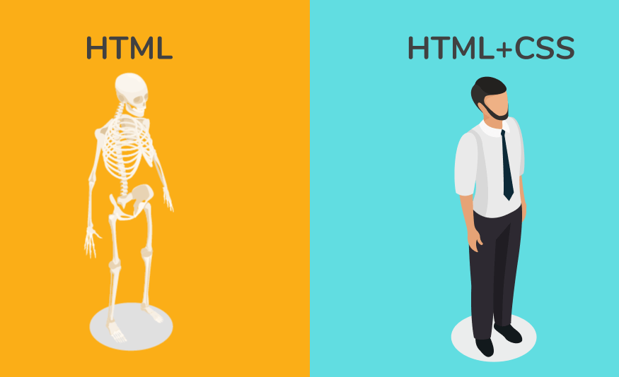

Front-End Development: Bringing Websites to Life
Front-end development is like the creative side of the internet. It's
all about making websites look awesome and ensuring that everything runs
smoothly when people like you interact with them.

The Face of the Website
Imagine you're the artist behind a website. Front-end developers are
like digital artists who design and build the parts of a website that
you can see and touch. When you visit a website, everything you see and
interact with – the buttons, the images, the layout – that's all thanks
to front-end developers.

HTML: The Blueprint
Think of HTML as the blueprint for a website. It's the language we use
to structure a web page, just like how you'd plan the layout of a room
in a house. With HTML, you decide what's a heading, a paragraph, an
image, or a link.

CSS: The Stylist
Now, let's talk about CSS. It's like the stylist for a website. Once the
blueprint (HTML) is in place, CSS comes in to decide how everything
looks. Colors, fonts, spacing – CSS adds the visual magic that turns a
basic page into something eye-catching.

JavaScript: The Enchanter
And then there's JavaScript, the enchanter of the web world. It makes
websites interactive. Ever clicked a button and something cool happened,
or seen an image slider changing on its own? That's JavaScript in
action, adding a touch of magic to the webpage.
Making the Web Fun and Engaging
Front-end development is what makes the web fun and engaging. It's the
reason why you can play games online, scroll through social media
effortlessly, or use cool apps on your phone.
So, if you're curious about how the digital world looks and feels,
front-end development is like having a canvas where you can paint the
online experiences you want people to have. It's about creativity,
design, and making the internet a visually exciting and interactive
place for everyone. 🎨✨